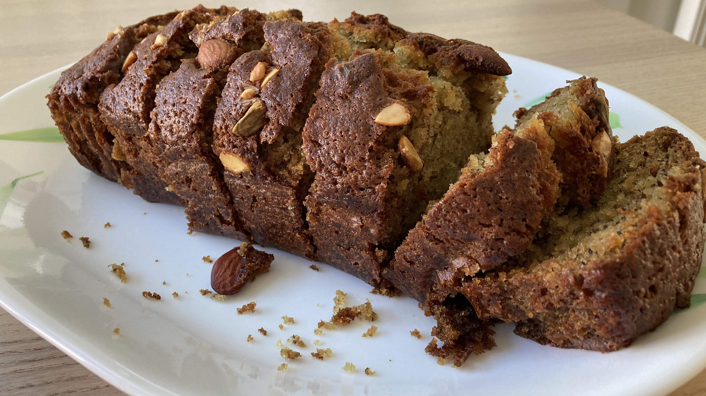

Banana Cake - Recipe

Granulated Sugar ■ 100g
Brown Sugar ■ 45g
Vanilla Extract ■ 1 tsp
Large Eggs ■ 2
Milk ■ 80g
Baking Soda ■ 1 tsp
Salt ■ 1/4 tsp
Ripe Bananas ■ 3
Unsalted Butter ■ 115g
Plain Flour/All Purpose Flour ■ 180g
Instructions
Mash the bananas until it has form a liquid with lumps
Then, in a big bowl, siv in the flour, baking soda and salt. Then leave aside for further use.
Prepare another big bowl. Put in the butter, granulated sugar and brown sugar. Mix together until it forms a mashed potato texture.
In your bowl of butter, add in the vanilla extract and eggs, then mix together.
Then, mix in the milk into your bowl of wet mixture.
Pour in the mashed bananas in your wet mixture, then mix it throughly.
Finally, put in the dry ingredients.
Put your final mixture into an oven-safe mold/container, then bake for 55-60 mins
And there it is, a nice, tasty Banana Cake!
Reset tickbox
Return to Recipes